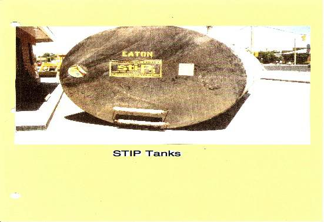

© Copyright 1999-2010 Anode Systems Company
Underground Storage Tank (Gasoline) Cathodic Protection Testing
STIP Tanks
124 North 22nd Court Grand Junction, Colorado 81501 (970) 243-4149 or (888) 609-9766 toll-free

There are several reasons why low voltage readings are measured on STIP tanks. The most often cause is from metal conduit that rubs against the edge of the riser bung. Over time, the conduit rubs the coating off the sharp edge of the bung and makes metal to metal contact causing an electrical short. This problem is detected by measuring a low electrical resistance between the tank bottom and the pump or electric conduit to the pump.

If the resistance is high (over 100 ohms) the anode may be consumed. This would exist at a site where the tank is more than 10 years old. If the tank is unprotected and less than 10 years old, the anodes may be in dry resistive pea gravel. Dry conditions around the anode would prevent the flow of current from it.On occasion an owner will say that he has STIP tanks when in actuality, he doesn't. The owner may mistakenly think that a coated tank is a STIP tank. This can be checked as above by measuring the electrical resistance between the bottom of the tank and the pump or conduit. A low reading will confirm that the tank is not isolated. A low resistance reading to the fill pipe is further proof that the tank is not a STIP tank.